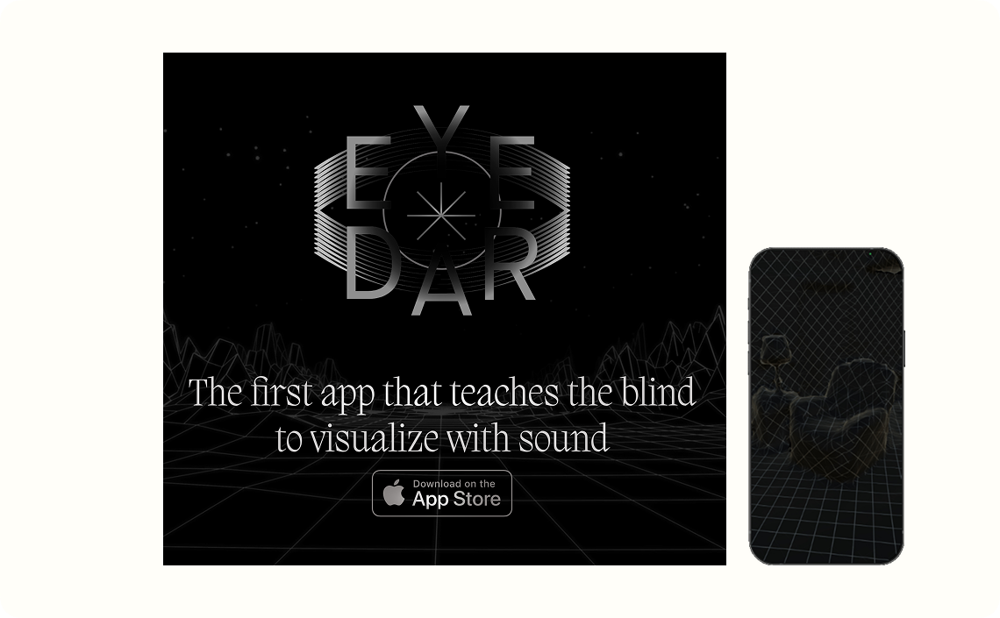
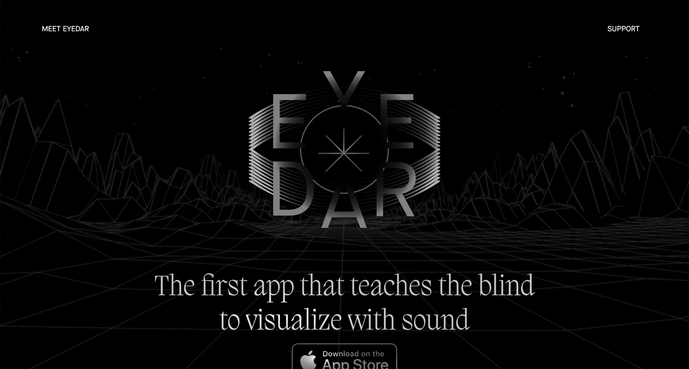
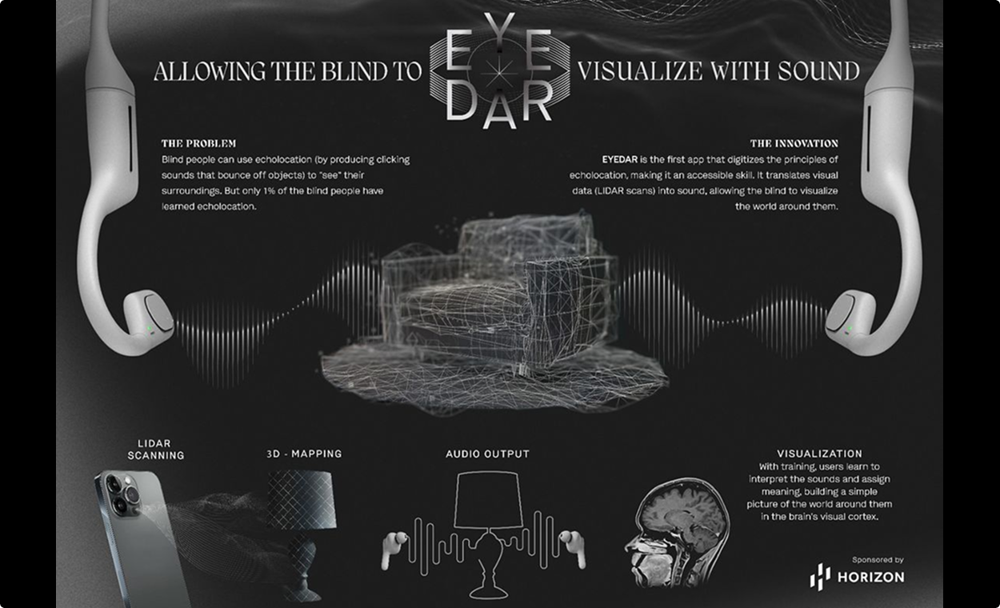
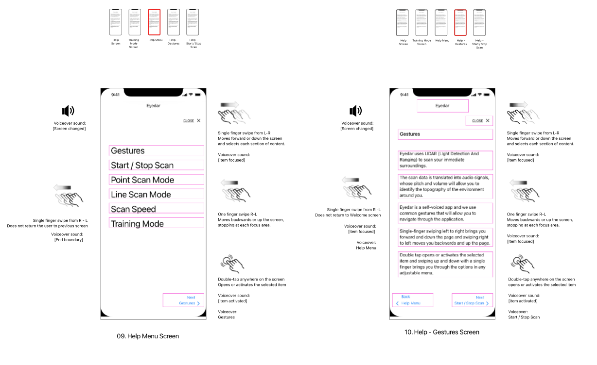

A unique LIDAR-based navigation application that translates spatial data into audio signals, enabling blind and visually impaired users to navigate their environment through sound.

Eyedar represents a paradigm shift in assistive technology for blind and visually impaired users. By leveraging LIDAR sensor technology, the application captures spatial information about the user's environment and translates it into an intuitive audio landscape, allowing users to "see" through sound.
The challenge was designing an interface that blind users could navigate confidently while the application runs. Every interaction needed to be discoverable through audio cues and haptic feedback, with no reliance on visual elements. I conducted extensive user testing with blind participants to validate the design decisions and ensure the interface was truly accessible.
The interface design centered on three core principles: discoverability, consistency, and safety. All controls are accessible through simple, memorable gestures and voice commands. Audio feedback provides continuous confirmation of user actions, while haptic patterns communicate system status without requiring visual attention.
I developed comprehensive training materials and instructions-for-use documentation that allowed testers and the eventual users to easily understand and use the application. The onboarding experience teaches users the audio landscape vocabulary gradually, building confidence before introducing advanced features.
This project deepened my understanding of accessibility design beyond compliance checkboxes. It required rethinking fundamental assumptions about interface design and centering the actual lived experience of blind users throughout the entire design process. Because the user interface was purely gestural, I also created a system of user flows that detailed the sound and gestures for each action. These flows were then vetted by blind users and once confirmed, implemented in the application.
Horizon Pharmaceuticals
Accessibility Design
Application Design
Interaction Design
UX Writing
Senior UX Architect
2022
LIDAR Sensors
Spatial Audio
iOS
Voice Interface
2x Grand Clio Health
2x Gold Clio Health
Silver Pencil, One Show
Silver Cannes Lion
Manny Award


